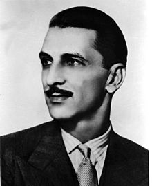

J. R. D. Tata was born as Jehangir on 29 July 1904 into a Parsi family. He
was the second child of businessman Ratanji Dadabhoy Tata and his French wife,
Suzanne "Sooni" Brière. His father was a first cousin of Jamsetji Tata, a
pioneer industrialist in India.
He had one elder sister Sylla, a younger sister
Rodabeh and two younger brothers Darab and Jimmy Tata. His sister, Sylla, was
married to Dinshaw Maneckji Petit, the second baronet of Petits. His niece,
Rattanbai Petit, was the wife of Muhammad Ali Jinnah, who later became the
founder of Pakistan in August 1947. His grandniece, Dina Jinnah, was married to
Neville Wadia, a notable businessman.
As his mother was French, he spent much of his childhood in France and as a
result, French was his first language. He attended the Janson De Sailly School
in Paris.
One of the teachers at that school used to call him L'Egyptian for
some strange reason. Tata also served for one year in a Spahis regiment during
the Second World War.After he left the service the whole regiment perished on an
expedition in Morocco.
He attended the Cathedral and John Connon School, Bombay. Tata got educated in
London, Japan, France and India.When his father joined the Tata company he moved
the whole family to London.
During this time, J.R.D's mother died at an early
age of 43 while his father was in India and his family was in France.
After his mother's death, Ratanji Dadabhoy Tata decided to move his family to
India and sent J.R.D to England for higher studies in October 1923. He was
enrolled in a Grammar school, and was interested in studying Engineering at
Cambridge.
Just as the Grammar course was ending and he was hoping to enter
Cambridge, a law was passed in France to draft into the army, for two years, all
French boys at the age of 20.
As a citizen of France J.R.D had to enlist in the army for at least 1 year. In
between the Grammar school and his time in the army, he spent a brief spell at
home in Bombay. After joining the French Army he was posted into the regiment
called Spahis (The Sepoys).
Soon the Colonel of the regiment found that there
was a member of his Squadron who could not only read and write French and
English, but could type as well; so he assigned him as a secretary in his
office.
Tata was once again transferred to the more luxurious office of a colonel. After
a 12-month period of conscription in the French Army he wanted to proceed to
Cambridge for further education, but his father decided to bring him back to
India and he joined the Tata Company.
In 1929, JRD renounced his French citizenship and became an Indian citizen, and
started working at Tata. In 1930 JRD married Thelma Vicaji, the daughter of Jack
'Prince' Vicaji, a colourful lawyer whom he hired to defend him on a charge of
driving his Bugatti too fast along Bombay's main promenade, Marine Drive.
Previously he had been engaged to Dinbai Mehta, the future mother of The
Economist editor Shapur Kharegat.